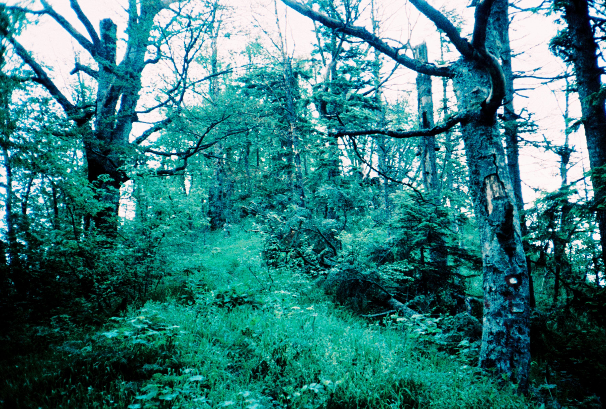

Untitled by Teodora Dž
I live at the farm now, and wear lipstick-sweet perfume to walk around in black rubber boots, cut through the wet field, walk up the gravel to the mailbox. The hyacinths are just about overripe, about to flag before the peonies take up the work. Somewhere southeast I swear there’s a linden tree, though it’s impossibly early, but that sweet, green smell of cum is unmistakable – the season of linden-lined streets and romantic green boys in my hometown. My perfume smells like having sex with your high heels on, like something sweet was crushed into the asphalt and is slowly bleeding its scent into the air. Not that it evokes these things as memories – it conjures them in the present. The smell is real, alive, erotic within itself and of itself. You can fuck yourself to perfume. I was dumb to this knowledge before I became addicted to the smell of his sweat in the pit of a worn tshirt on the bedroom floor.
The most famous Bosnian love song is set in a rose garden, a girl with a pitcher of water on one side of the fence and the poet on the other. He says salaam to her, she does not answer. The pinnacle of the song is when the wind blows from the trees and unplaits her thick braids, the smell of hyacinths rising from her undone hair. His head spins, he stumbles. She looks at him only once, darkly. The smell of her hair is the hinge of the song and its highest note, which sends our poet irreversibly into hopeless love. The song disintegrates, it leads to his death, and her death, and the death of the garden, and the shattering of the water pitcher, amid the eternal life of the song.
That summer of the awakening, I would bike uphill to my room the morning after and lay crusted in his smell, alive to it, obsessed with sex. It spilled over my pillow in the cold little room with the small window and slanted light, filled it. I would make myself cum over and over. His smell sent me hopelessly into love. A sense I did not know was a tool for the erotic became the best one.
In fucking, there’s that place where you are no longer fantasizing about fucking, not remembering fucking, not imagining that you are another with another, or exclaiming the fucking or describing the fucking or communicating the fucking – just the hard pit of sex, wholly original and wholly void, a few earned moments of evaporated desire and vanished selfhood.
That summer I wanted to smell like tuberoses., but in the winter I found something better: beaver gland. Castoreum, rosewood, nutmeg, labdanum, vetiver, oakmoss: a monument to that summer of redemptive sex. Glands, resins, oils, dirt, wood, the smell of truly carnal 27 year old sex, the singed, greasy smell of Balkan pollution, cigarettes, smoked meat, zinging with home, and more than that too. It is not just that smell evokes the past or conjures the future. Not merely referential. Some residue in the alchemy of each smell’s unrepeatable context is complete, of itself, in the moment. Smell is a door to the same void in the core of fucking.
His smell has no equal. A patch of his shirt is enough erotic energy to fuel any number of self-fucks – eyes closed, not picturing anything, not remembering anything, just inhaling. A ticket to my favourite place: gone.
White florals, like tuberose, smell like decay, the garbage strike summer, overripe and narcotic,what Fragrantica user cinnamonpeele describes as “real gardenia, not perfume gardenia, live, dirty gardenias, covered with ants that crawl onto your hands when you touch them, spicy and indolic and gorgeous; a silver tightrope over a headache.” And Shakespeare describes that apogee of sweetness as ‘loathsome in its own deliciousness’. Sweetness wedded to decay, decomposition, all the way down to the soil, as fleshy and dirty and momentary as live flowers really are. The garden I inhabit now was designed to bloom and die in phases. The woman who planted, who lived in the house, is dead. At the end of the year you can find the vestigial frozen rosehips and tiny apples fermenting on the deadened winter branch.
I know that there is no way to know if every linden tree reminds me of another linden tree. If I follow that path to its beginning, I come up empty. There is no original tree. There is only each and every tree, and each every sweet and heady noseful of cum. Smell is a way to be alive in the dying garden, to flourish without hoping to endure.
I return to where I only have the nowness of the smelling. Wearing his shirt, wearing my perfume. Inhaling the pleasure of it, the warmth spreading from tits to belly to clit, to bottom lip. The bursting clit is the flowering of the rod. Through the flesh I am momentarily released from the flesh, a departure so total that desire ceases and peace zaps around the room.
